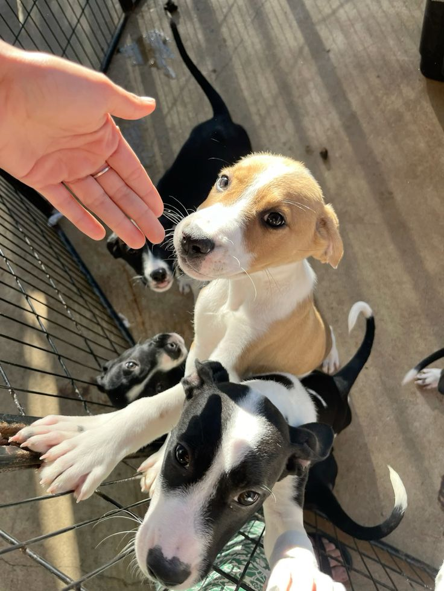
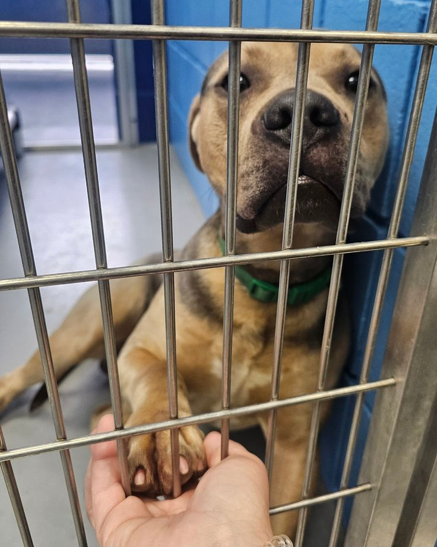
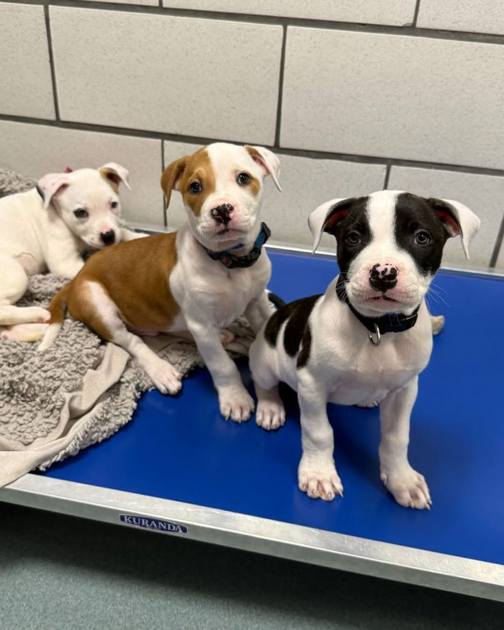
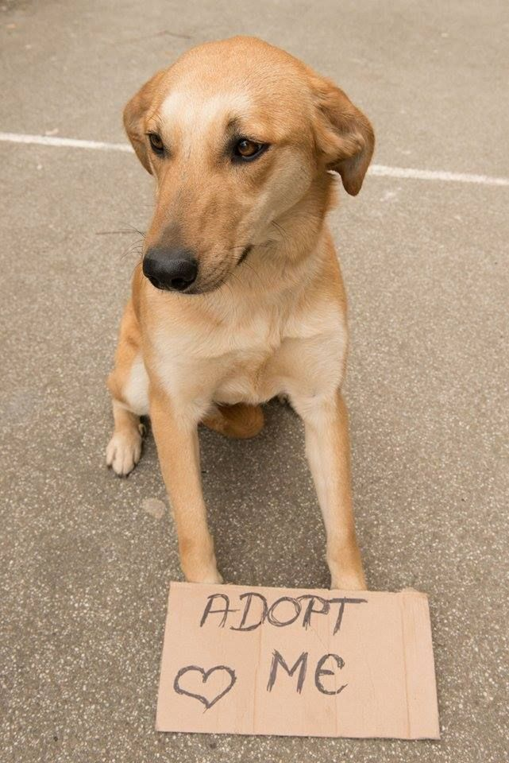
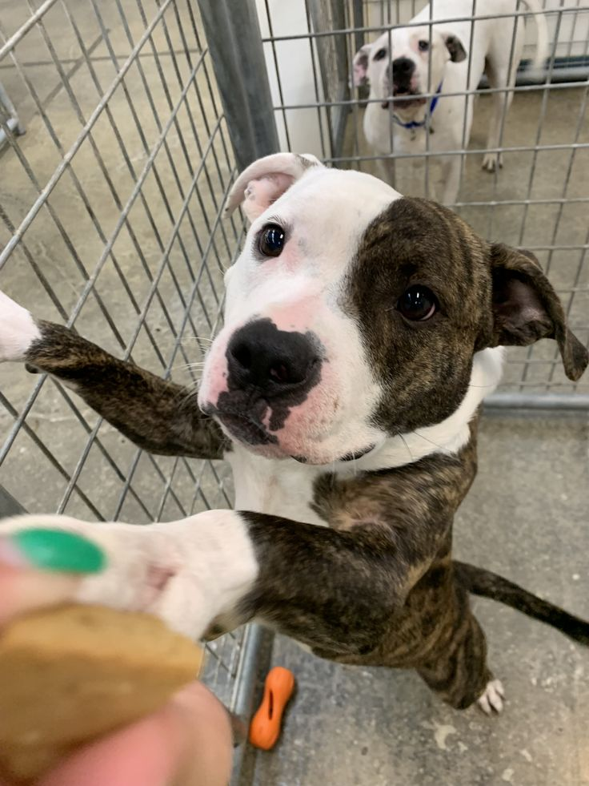
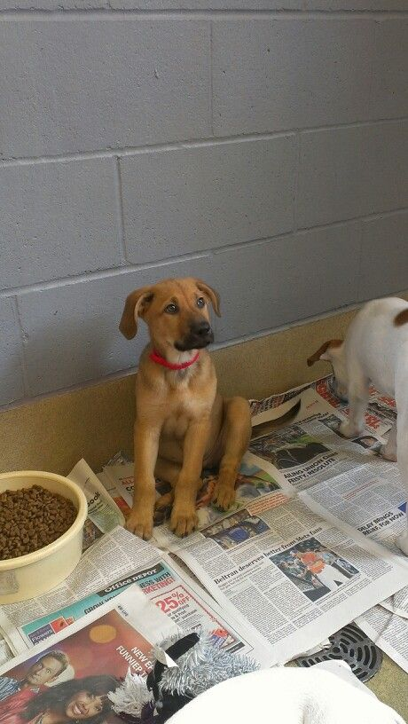
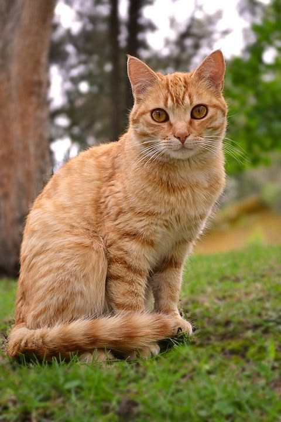
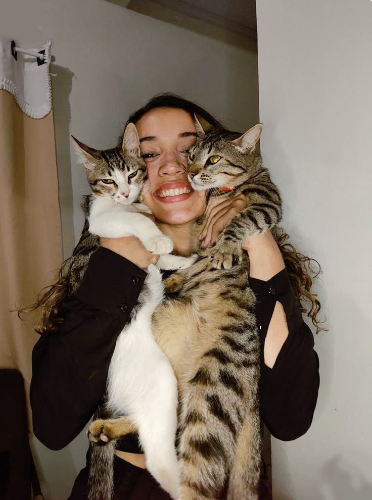
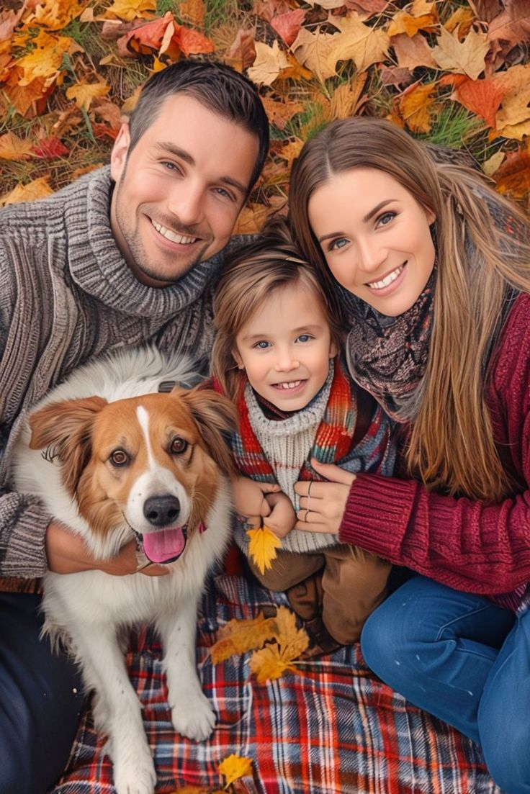
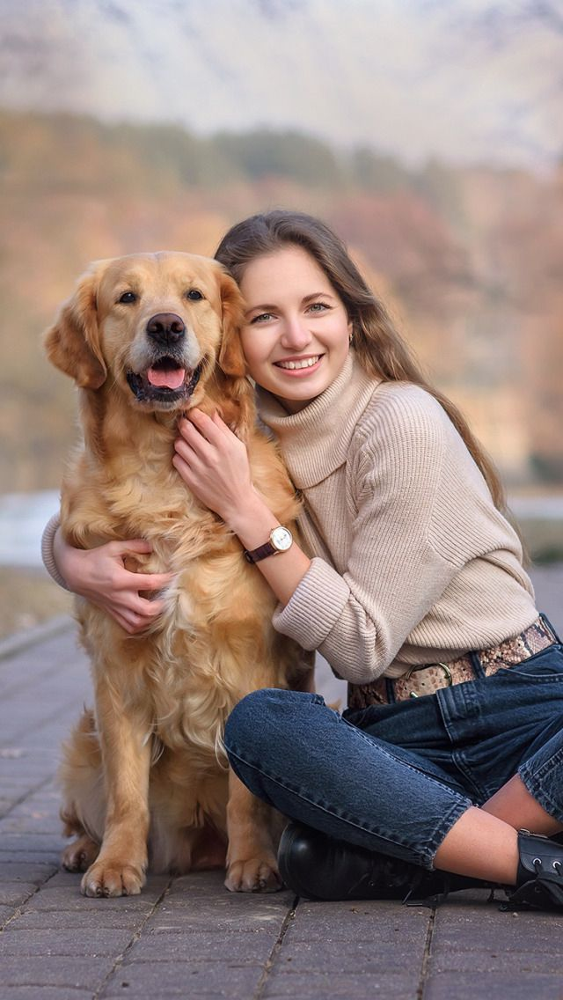

Unidas por aquellos que no tienen voz
En Patitas Unidas estamos unidos por el deseo de que cada animalito tenga un hogar, una familia y un lugar feliz. Trabajamos para transformar el abandono en cuidado y compañía , con rescates responsables, atención cercana y procesos de adopción que generen vínculos duraderos. Creemos que cada peludo merece crecer rodeado de cariño, y que al unir fuerzas construimos una comunidad más solidaria, donde la alegría de los animales se convierte también en la alegría de las personas que los reciben.










Alias: aca ponemos un alias | PayPal |
Recibimos mantas, toallas, camitas, juguetes, comida y medicamentos en nuestro Shelter Principal.